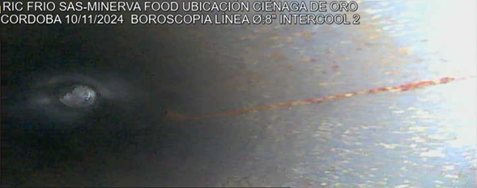

Evaluación interna de ductos, soldaduras y equipos industriales sin desmontaje. Servicio disponible por horas (mínimo 4 horas) o jornada completa.

La inspección visual remota es una técnica de ensayo no destructivo (END) que permite evaluar el interior de ductos, tuberías y componentes industriales mediante equipos de boroscopía sin necesidad de desmontaje.
Esta metodología permite obtener evidencia visual documentada del estado interno del equipo, identificando corrosión, fisuras, acumulación de residuos, defectos en soldaduras y posibles obstrucciones.
La inspección visual remota permite detectar fallas internas antes de que se conviertan en problemas críticos que generen paradas no programadas o riesgos operativos.
Reduce tiempos de intervención, minimiza costos de desmontaje y mejora la confiabilidad operativa de sistemas de transporte de fluidos, intercambiadores de calor y estructuras industriales.
Se ejecuta bajo buenas prácticas de ensayos no destructivos (END) y lineamientos técnicos utilizados en estándares internacionales como ASME y API cuando aplican al servicio.
Atención directa y rápida vía WhatsApp
Solicitar Cotización
Conozca todos nuestros servicios de inspección industrial:
Ver servicios completos